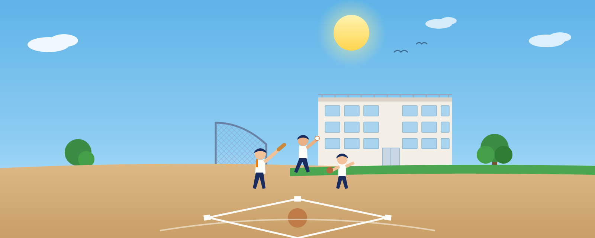

監督
吉村 篤志
チームの指揮・全体指導を担当。「野球を好きになること」を何より大切にしています。

「野球を好きになること」が、いちばんの上達です。
平野スポーツ少年団のホームページをご覧いただき、ありがとうございます。私たちは、地域の子どもたちが野球を通じて心と体を育むことを目的に活動しているチームです。
勝つことだけを目標にはしません。あいさつ、道具を大切にする心、仲間を思いやる気持ち——グラウンドで学ぶことは、野球の技術だけではないと考えています。うまくいかない日も、悔しくて涙が出る日も、すべてが子どもたちの成長の糧になります。
初心者、大歓迎です。キャッチボールをしたことがないお子さんも、半年後には見違えるほどたくましくなります。まずは一度、グラウンドに遊びに来てください。コーチ・団員一同、心よりお待ちしています。
平野スポーツ少年団 監督 吉村 篤志
チームの指揮・全体指導を担当。「野球を好きになること」を何より大切にしています。

低学年チームを率いる大ベテラン。野球の楽しさをじっくり伝えます。

元気いっぱいの若手コーチ。子どもたちと一緒に全力で走り回ります。

長年の経験を活かした確かな指導。基本をひとつずつ丁寧に。

いつも笑顔のベテランコーチ。あいさつや礼儀も大切に教えます。

バッティング指導が得意なベテラン。じっくり見守る優しい指導です。

工夫を凝らした練習メニューが持ち味。子どもたちを飽きさせません。

フットワークの軽い若手コーチ。低学年から高学年まで幅広くサポート。

育成のとりまとめ役。サポーター制度の運営を担当しています。

Aチームの育成窓口。サポーター制度に関するご連絡はこちらへ。

Cチームの育成窓口。見守り中のお気づきの点はお気軽にどうぞ。
| 日付 | 曜日 | 予定 | 時間・場所 |
|---|---|---|---|
| 7/4 | 土 | ライオンズ杯 開会式 | 8:00〜 皇子山グランド |
| 7/5 | 日 | 全学年練習 | 9:00〜15:00 平野小グランド（12:00〜15:00 体育館使用） |
| 7/11 | 土 | 全学年練習 | 14:00〜17:00 平野グランド |
| 7/12 | 日 | 全学年練習 | 9:00〜15:00 平野グランド |
| 7/18 | 土 | 全学年練習 | 14:00〜17:00 平野グランド |
| 7/19 | 日 | 全学年休み | — |
| 7/20 | 月・祝 | 全学年練習（海の日） | 9:00〜12:00 平野グランド |
| 7/25 | 土 | 全学年練習 | 14:00〜17:00 平野グランド |
| 7/26 | 日 | 全学年練習 | 9:00〜12:00 平野グランド |
予定の変更等は LINE でお伝えします。
雨天時の中止や時間変更、持ち物などの連絡はLINEで行いますので、ご確認をお願いします。
日々の活動の様子やチームの雰囲気は Instagram で発信しています。ぜひご覧ください！
おうちでもできる基本練習のポイントをまとめました。1日10分の積み重ねが、大きな差になります。


熱中症予防のためのサポーター制度です。子どもたちの体調管理を最優先にサポートをお願いします。練習している子どもたちを見守れる位置で、日陰でサポートをお願いします（保護者の方が倒れては大変です！）。以下、サポートいただきたい代表例のご案内です。
何かあれば育成までご連絡をお願いいたします。
対象：小学1年生〜6年生（男女問わず）／ 活動場所：平野小学校グラウンド
InstagramのDMで問い合わせる